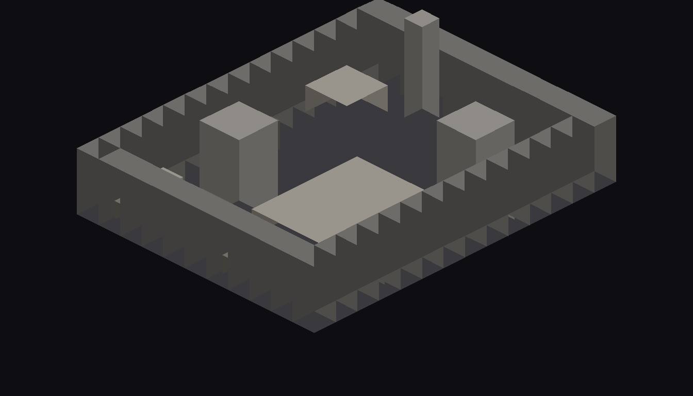
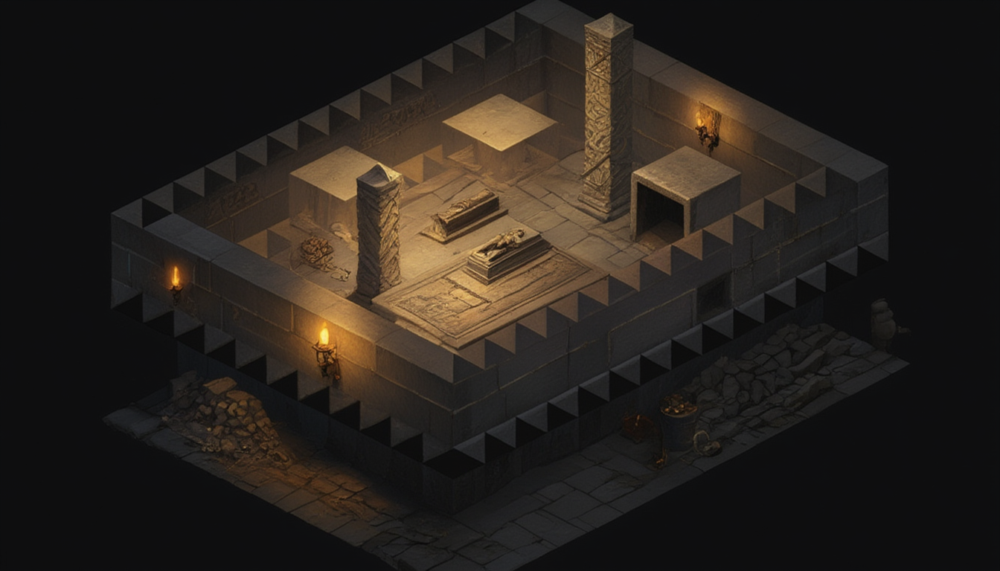
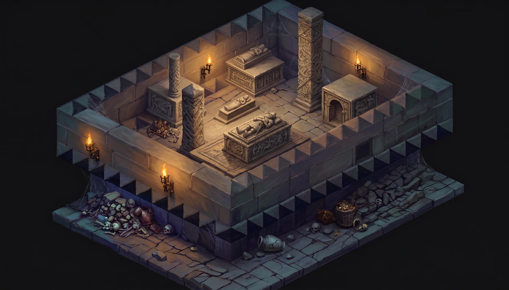
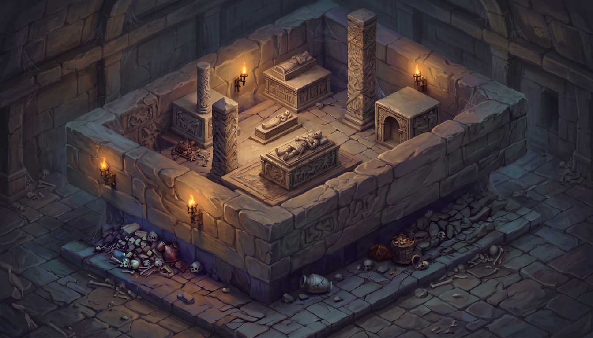
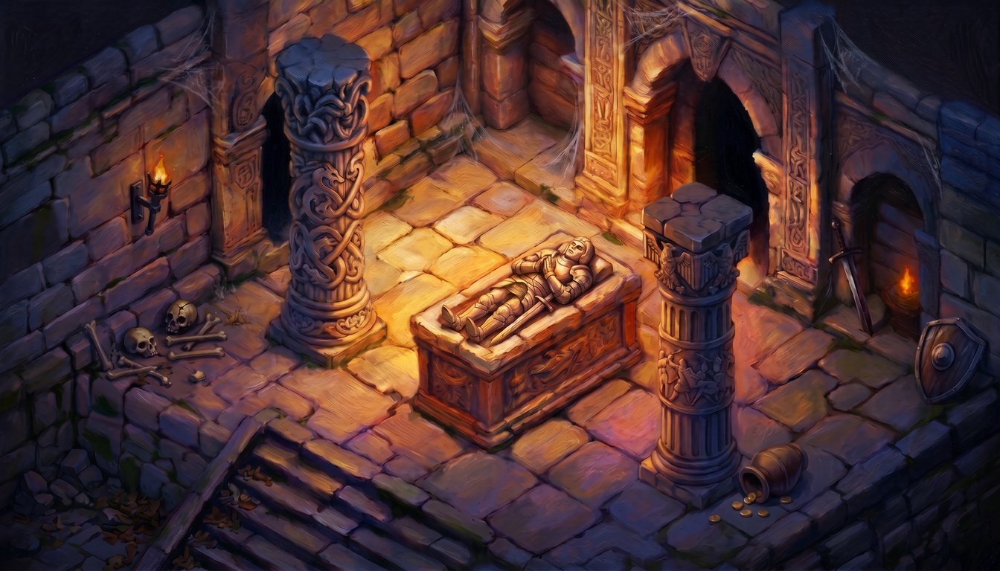

Verdict: HONEST NEGATIVE. Two blind 5-scorer panels put the candidate at 6.5 vs the incumbent 8.0 (disguised PoE2 control 9.0 / 9.5 in/near band). Denser authored geometry successfully produced denser ORNAMENTATION (paint richness followed geometry richness — effigies, knotwork columns, skull piles, torches all present), but content density alone did not beat the incumbent's superior painterly carving craft. Not adopted; the deployed incumbent is preserved.





(a) The cutaway greybox (wall_height=5) renders perimeter walls as per-cell boxes, giving a toothed/crenellated wall-top that the depth-ControlNet paints as a repetitive tiled/gamey motif — a panel-penalized artifact (panel-1). A second Gemini "frame-fill + wall-solidify" pass removes it (black-margin fraction 52%→6%, measurable) but is a post-hoc patch, not registration-by-construction. (b) Richness-principle refinement: denser geometry DID buy denser ornamentation (content), confirming "paint richness follows geometry richness" for CONTENT — but the candidate stayed flat at 6.5 across BOTH panels, so the binding ceiling for beating an 8.0 incumbent is painterly carving fidelity (AI relief reads soft/repetitive/flat vs crisp hand-painted stone), not prop count. Honest path past 8.0 likely needs a higher-fidelity / crypt-trained paint model, not merely more props.